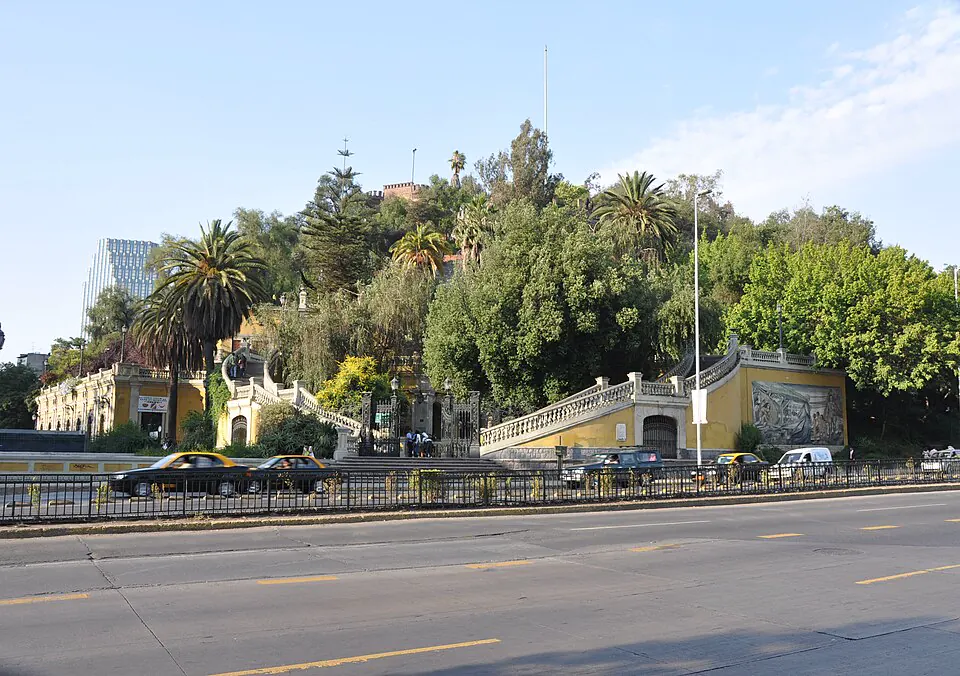

Fundación de Santiago

En enero de 1540, Pedro de Valdivia, con autorización de Francisco Pizarro, partió del Cusco con un pequeño grupo de españoles, que creció en el camino, y numerosos indígenas auxiliares. Lo acompañaba Inés de Suárez. Tras cruzar el Desierto de Atacama, llegó al valle del Mapocho a fines de 1540. El valle estaba habitado por comunidades picunches, del mundo mapuche, y había estado bajo dominio del Imperio inca.
El 12 de febrero de 1541, Valdivia fundó la ciudad de Santiago, llamada entonces Santiago del Nuevo Extremo, junto al cerro Huelén, hoy Santa Lucía. El alarife Pedro de Gamboa la trazó en damero, en torno a una plaza central. En marzo se instaló el cabildo, que en junio nombró a Valdivia gobernador.
La ocupación provocó resistencia. El 11 de septiembre de 1541, fuerzas encabezadas por Michimalonco atacaron e incendiaron la ciudad. Según las crónicas, Inés de Suárez fue decisiva en la defensa y ordenó dar muerte a los caciques prisioneros. Los sobrevivientes pasaron largos meses de hambre. Para los españoles fue un acto fundacional; para los pueblos del valle, el inicio de la pérdida de sus tierras y del trabajo forzado.
Versión para niños
En 1540, Pedro de Valdivia salió del Perú con un grupo de españoles y muchos indígenas. Con él venía Inés de Suárez, la única mujer española del grupo. Después de cruzar el desierto, llegaron al valle del río Mapocho, donde vivían pueblos indígenas desde hacía mucho tiempo. El 12 de febrero de 1541, Valdivia fundó la ciudad de Santiago a los pies de un cerro. Pocos meses después, el lonko Michimalonco atacó la ciudad para defender su tierra. Santiago se incendió, pero los españoles la reconstruyeron.
Para maestros
Nivel sugerido: 5° básico
Objetivo: Explicar la fundación de Santiago como un hito de la conquista y reconocer las distintas miradas sobre este hecho: la de los conquistadores y la de los pueblos del valle.
Preguntas para la clase:
- ¿Por qué Valdivia eligió el valle del Mapocho para fundar una ciudad?
- ¿Cómo se organizaba una ciudad española en damero?
- ¿Por qué Michimalonco atacó Santiago?
Actividad (20–30 min): Los estudiantes comparan un plano del damero fundacional de Santiago con un mapa actual del centro de la ciudad e identifican la Plaza de Armas, el cerro Santa Lucía y el río Mapocho. Luego escriben dos breves relatos de la fundación: uno desde la mirada de un español y otro desde la de un habitante del valle.
Fuentes sugeridas: Memoria Chilena; Museo Histórico Nacional; Biblioteca Nacional Digital.
Objetivos de Aprendizaje (Currículum Nacional)
- 1° básico · HI01 OA 07 Conocer sobre la vida de hombres y mujeres que han contribuido a la sociedad chilena … los fundadores de las ciudades, los exploradores
- 5° básico · HI05 OA 02 Describir el proceso de conquista de América y de Chile … algunas expediciones y conflictos bélicos, y la fundación de ciudades
- 8° básico · HI08 OA 08 Analizar el rol de la ciudad en la administración del territorio del Imperio español
Personajes
Revisión humana pendiente. Cómo se revisa · Reportar un error
Cómo citar: Historia de Chile. (2026). Fundación de Santiago. En Historia de Chile: atlas y línea de tiempo. https://moises-salgado.github.io/historia-de-chile/momento/fundacion-de-santiago.html